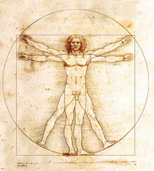

Uma plataforma onde o conhecimento feminino brilha
coectando projetos, ideias e inovações para transformar o mundo
Simone de beauvoir
Escritora francesa
Ela foi uma filósofa, escritora e feminista francesa, nascida em 1908 e falecida em 1986.
Beauvoir é mais conhecida por sua obra O Segundo Sexo (1949), um marco do feminismo, onde analisa a
construção social da mulher e a opressão de gênero. Além de suas contribuições filosóficas, também escreveu
romances, ensaios e autobiografias. Foi companheira de Jean-Paul Sartre e uma das figuras mais influentes do
existencialismo e da luta pelos direitos das mulheres.
Conheça um pouco mais do Femmind
...

Qual o papel das mulheres nas ciências sociais aplicadas?
Este artigo aborda sobre qual o papel deisginado para as mulheres nas ciências humanas e qual...
 Elena marconidis
Elena marconidis

Qual diferença que mais é notada entre a filosofia e a sociologia
A filosofia e a sociologia tem objetivos diferentes, a sociologia estuda o papel do ser...
...
Porque sentimos que a geografia não tem tanto espaço nas ciências humanas
Ablablabalabalba ghsgkldjgsj iurgoiusjb kdlksg...